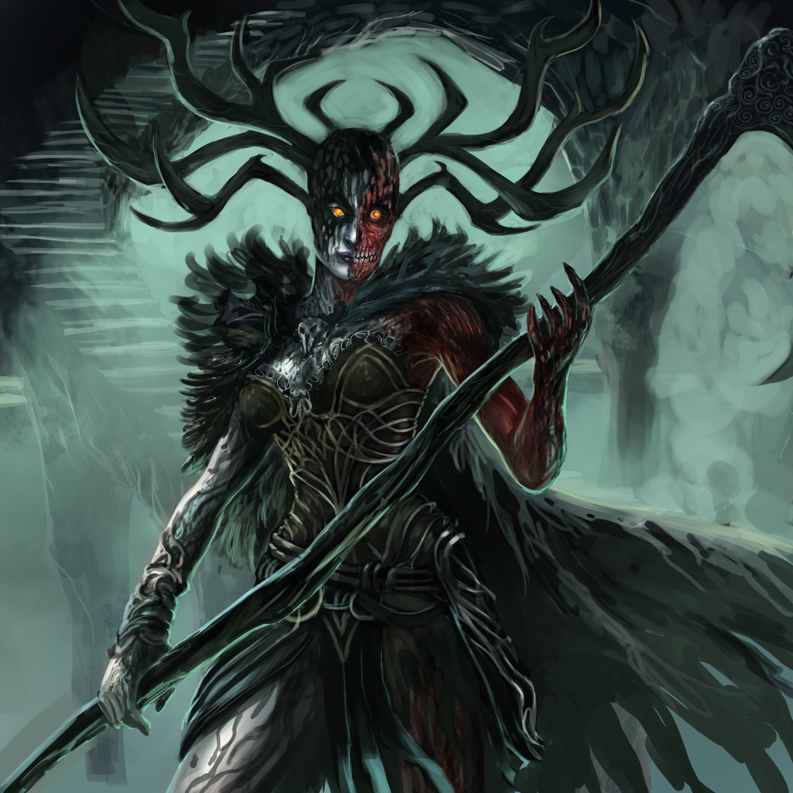
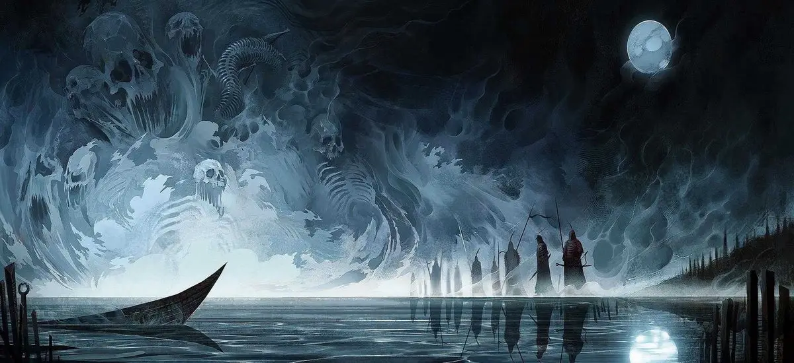
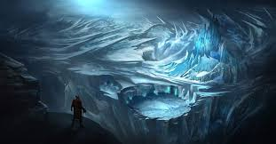

Rijk van de dodenHelheim is de wereld van de doden, geregeerd door Hel, de dochter van Loki. Het is geen plek van eeuwige straf, maar een plek van rust voor degenen die niet in strijd zijn gevallen. |
 |
|  |
Leven in helheimDe zielen in Helheim worden verdeeld op basis van hun daden tijdens hun leven. Ze leven in een grauwe en desolate omgeving, waar de regen en mist nooit ophouden. |
LandschapHelheim wordt vaak afgebeeld als een sombere en koude wereld, met een landschap van mist en ijzige gebieden. Het is een plek van overgang, waar de zielen wachten op hun uiteindelijke bestemming. |
 |